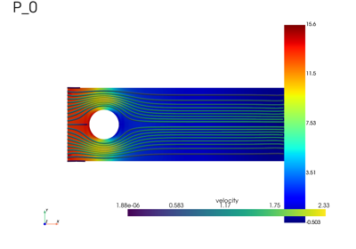
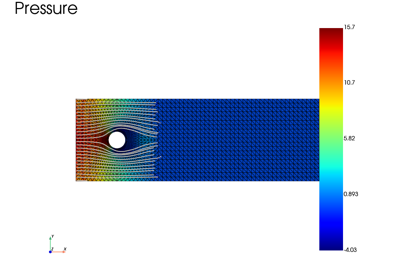
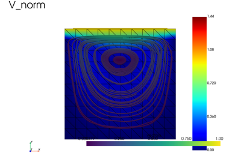

Custom weak forms
Problems defined directly from a user weak form written with fedoo’s differential operators: Stokes and Navier-Stokes flows. The Poisson equation is in the basic examples (Define and solve user equation).

Stokes flow around a cylinder with a user-defined weak form
Stokes flow around a cylinder with a user-defined weak form

Transient Navier-Stokes flow around a cylinder with a user weak-form class
Transient Navier-Stokes flow around a cylinder with a user weak-form class

Lid-driven cavity (Stokes flow) with a user-defined weak form
Lid-driven cavity (Stokes flow) with a user-defined weak form